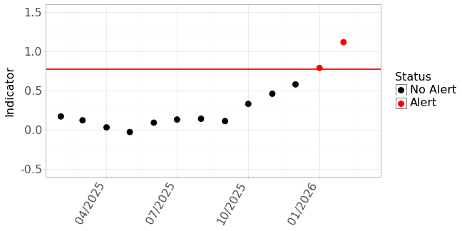

Conservation Area Status
NMFS has reopened the Pacific Loggerhead Conservation Area (LCA) to fishing with drift gillnets (DGN). The LCA had been close to DGN since June 1, 2024. (Posted 8/1/2024)
Closure status provided by NOAA Fisheries West Coast Regional Office
Environmental Conditions
El Niño: Loading…
Updated: Loading…
Forecast: Loading ENSO synopsis…
NOAA’s Climate Prediction Center
Marine Heatwave (MHW)
Forecast period: Loading…
Loading…
North Pacific: Loading…
Tropical Pacific: Loading…
Closure Area Sea Temperature
Loading temperature data…
Recent and historical monthly sea surface temperatures within the Loggerhead sea turtle conservation area.
Dataset: GHRSST MUR
{kind=link}
TOTAL Bycatch Avoidance Tool
TOTAL Time Series
- Most recent forecast: Loading…
- Status: Loading…
- Indicator value: Loading…
- Updated: Loading…
This year’s Temperature Observations To Avoid Loggerhead (TOTAL) values for the Loggerhead Conservation Area. An alert is indicated when indicator values (the timeseries) exceed a threshold of 0.77 (red horizontal line).

Monthly Sea Surface Maps
Sea Surface Temperature 2025
‹ Previous Next ›

Monthly mean sea surface temperature off Southern California. The Pacific Loggerhead Conservation Area is located within the black lines and the coast. Use arrows to view the last six months of measurements.
Dataset: GHRSST MUR
Sea Surface Temperature Anomaly 2025
‹ Previous Next ›

Monthly mean surface temperature anomaly (deviation from the average temperature) off Southern California. The Pacific Loggerhead Conservation Area is located within the black lines and the coast. Use arrows to view the last six months of measurements.
Dataset: GHRSST MUR
The information on this page may be used and redistributed freely, but is not intended for legal use. Neither the data contributors, CoastWatch, NOAA SWFSC, nor any of their employees or contractors, makes any warranty, express or implied, including warranties of merchantability and fitness for a particular purpose, or assumes any legal liability for the accuracy, completeness, or usefulness of this information. For official information about El Niño/La Niña contact NOAA’s Climate Prediction Center. For official information about regulation of the drift gillnet (DGN) fishery contact NOAA Fisheries West Coast Regional Office.